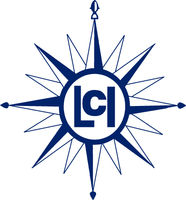
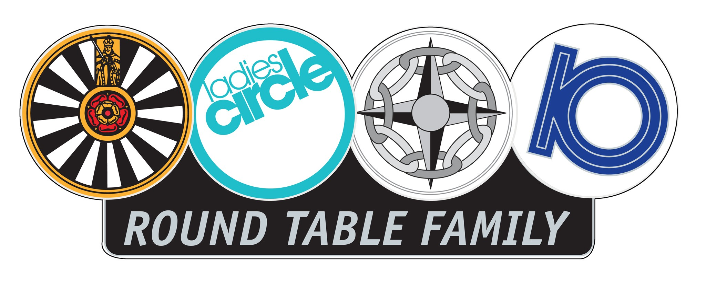

History of Ladies Circle
Ladies’ Circle (LCI) has its roots set in England. At that time, during the Second World War ‘Circling’ was limited to social obligations:
- helping out at the hospitals
- running canteens
- visiting hospitalised people
- gathering articles of clothing for orphans
On 29 May 1959, an important date in the history of LCI, at the Round Table International Annual General Meeting in Leiden, The Netherlands the three countries established Ladies’ Circle International (LCI). The founder members of LCI were Molly Worley (President), LC GB&I, Jen Ulfvik (Vice President), LC Sweden, Margery Coombe (Secretary), LC GB&I, and Søs Tarp (Treasurer), LC Denmark. The Constitution was drawn up, based on equality of all Member Associations within an international structure. From this developed the Aims and Objectives, these are since then never changed. Ladies’ Circle International expanded into new countries and other continents. In 1959 LC Finland was founded, followed by LC Norway in 1961, LC Belgium and LC Hong Kong in 1967, LC France and LC India in 1970, LC Kenya in 1971 and LC Germany in 1972. At the AGM in 1994, a significant rule change was passed; following which Ladies’ Circle International became totally independent from Round Table. Ladies’ Circle International is since then open to all women between the ages of 18 and 45. In 2015 LCI & RTI signed a Memorandum of Understanding between the two clubs to encourage a closer relationship whilst assisting each other. Referred to as the ‘Side by Side’ (SBS) Agreement for which two pins have been produced. Proceeds from sale of pins go towards International Charity projects for Ladies’ Circle and Round Table respectively.
Local
Most Circles organise 1 or 2 (statutory) meetings per month, equating on average to 15-20 meetings per year (as there are no statutory meetings during July and August.) Each Circle is responsible for creating its own programmes, what means that no two Circles are exactly the same. During these meetings, discussions around activities the Circle would like to engage in ranging from organising fund raisers, the charities they would like to support, family meetings, conferences, sport activities, etc. Each Circle organises all of the events that need to be done to make the local Circles work. Nevertheless, these meetings always offer a great environment for friendship and amusement. Circles may choose to wear our Ladies’ Circle pin and jewel (chain of office) to formally open and close the meeting, read the aims and objects, approve the report of last meeting, introduce visitors, discuss matters of concern and give all in attendance equal opportunity to engage and learn. The local meetings will bring the same group of ideally 15 to20 members together, but the opportunities to get together are far greater than that of only the regular meetings per monthArea/Region
The areas exist in some large associations, where a level between local and national level is needed to promote friendship more easily within the local Circles. They also organise meetings and activities to facilitate encounters and exchanges between different Circles from the same area and make the link between the Circles and the National Board.National
Each association holds an annual general meeting or AGM for all its members. As it’s hosted on local or area level, during this AGM, discussions are bases around matters concerning the running of the organization for the incoming year, while meeting many old friends for the first time. Most of associations also hold a half-year meeting. Associations have a National Board to deal with the structure of the organisation, coordination and communication between the Circles, etc.International
Ladies’ Circle is present on 5 continents, creating the chance of international encounters and exchanges. For example, you can take part in number Club exchange which combine Ladies’ Circles having the same Circle number worldwide. You also get the chance to participate in AGM’s of any other associations in other countries and participate in any of the international meetings. Circlers are encouraged not fear to speak another language than your mother language, as the official language of Ladies’ Circle is “bad” English. LCI is divided into 5 regions:- NORDIC: Northern Europe and America
- MIDDLE: Central and Eastern Europe
- SOUTHERN: Southern Europe and Mediterranean
- AFRICAN: Africa Middle East Indian Ocean
- APAC: Asia Pacific
Region
Each region organises a Mid Term Meeting (MTM) during January/February these can be grouped together on alternate years.
5 CLUB FAMILY
Ladies’ Circle is a part of the Round Table Family composed by 5 clubs who promote the same values.- Ladies Circle for you women between 18 and 45 years old
- Round Table International for young man between 18 and 45 years old
- Tangent Club International gathers former Circlers and is composed by women of at least 42 years old
- Agora Club International gathers former Circlers and is composed by women of at least 42 years old but they do accept non-former Circlers within their members
- 41 Club International: For Tablers who has reached the age of 40.